10 部片单 · 恐怖 / 科幻 / 惊悚 / 悬疑 / 剧情
| # | 片名 | 类型 | 评分 / 状态 |
|---|---|---|---|
| 01 | 鬼书 | 恐怖 / 心理惊悚（丧亲与母性焦虑） | 6.6 / 98% / 86 |
| 02 | 僵尸肖恩 | 恐怖喜剧 / 丧尸（「血与冰淇淋」三部曲之一） | 7.6 / 92% / 76 |
| 03 | 阴风阵阵 | 恐怖 / 铅黄（giallo）· 视觉噩梦 | 7.4 / 94% / 7.3 |
| 04 | 威尼斯疑魂 | 惊悚 / 悬疑 / 恐怖（丧女与预知） | 7.2 / 93% / 7.1 |
| 05 | 猩球崛起 | 科幻 / 惊悚 / 剧情（猿族起源） | 8.2 / 82% / 68 |
| 06 | 黑暗面 | 悬疑 / 惊悚（单面镜与密室） | 8.1 / 7.3 |
| 07 | 夜行动物 | 惊悚 / 悬疑 / 剧情（书中书） | 7.4 / 74% / 67 |
| 08 | 夜长梦多 | 悬疑 / 惊悚 / 黑色电影（钱德勒改编） | 7.3 / 96% / 86 |
| 09 | 荒蛮故事 | 剧情 / 惊悚 / 黑色喜剧（六段失控） | 8.8 / 94% / 8.1 |
| 10 | 房间 | 剧情 / 惊悚（囚禁与重建） | 8.8 / 93% / 86 |
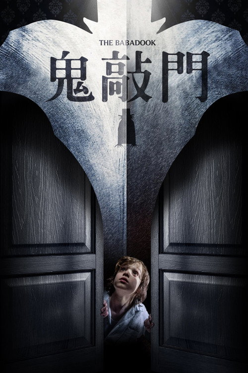
鬼书 The Babadook
「你不能把悲伤赶走，你只能给它一间房间。」
剧情梗概
丈夫在送她去生产的路上车祸身亡，七年后艾米莉亚仍独自抚养六岁的塞缪尔。男孩怕鬼、失眠、自己动手做投石器和弩，说家里有东西要来。某夜他挑了一本从没见过的红色绘本《巴巴杜先生》当睡前故事——「咚、咚、咚，三声敲门，你就知道他来了」。书被撕掉又自己拼回来，之后屋子里开始出现敲不出的声音、关不紧的门，而最先变的，是艾米莉亚自己。
亮点
- 詹妮弗·肯特的长片处女作，改编自她 2005 年的同名短片；拿下纽约影评人协会最佳处女作、AACTA 最佳影片 / 导演 / 原创剧本三项。
- 成本 200 万美元，全球票房 1030 万。全片主要场景只有一栋房子，主要演员只有四位。
- 「巴巴杜」是什么，电影从头到尾没有解释：它是鬼、是创伤、还是艾米莉亚身体里那部分正在坏掉的东西，导演拒绝给答案。
- 埃茜·戴维斯把一个正在崩塌的母亲演得毫无表演痕迹，凭此获美国在线影评人协会最佳女主角提名。
- 它是 21 世纪被讨论最多的恐怖片之一，也是少见的「影评人极爱（RT 98%）、普通观众觉得闷（豆瓣 6.6）」的极端分裂样本。
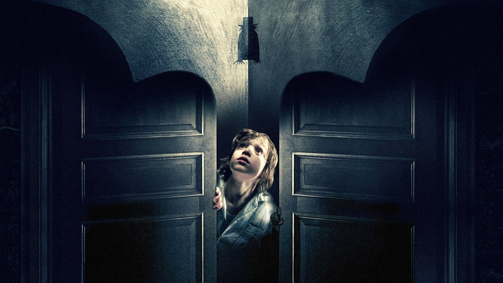
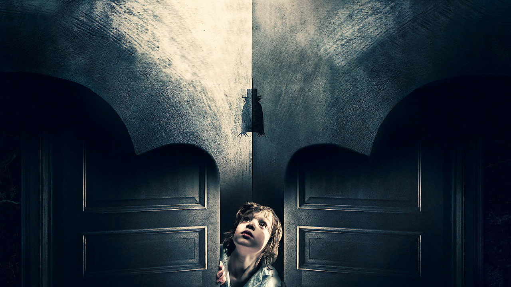
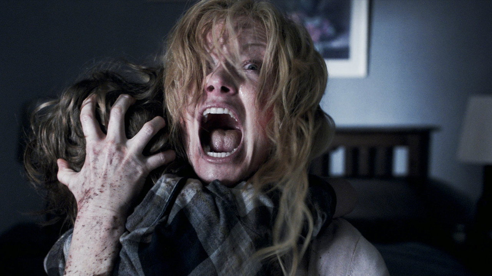
导演与主创 · 他们的历史作品
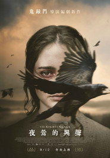
夜莺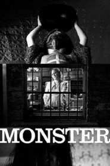
Monster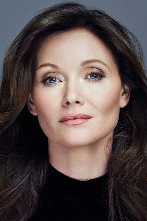
 刺客信条
刺客信条 黑客帝国3：矩阵革命
黑客帝国3：矩阵革命 黑客帝国2：重装上阵
黑客帝国2：重装上阵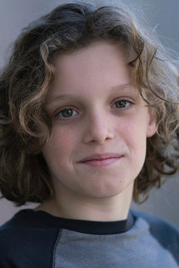
短评（轻微剧透）
《鬼书》最聪明的地方，是它把「怪物」这个类型元素重新接回了它本来应该接的地方——悲伤。肯特没有设计任何传统恐怖片的桥段：没有跳吓的节奏，没有血，甚至那个黑帽子高个子的怪物出场得相当克制。真正让人坐不住的是艾米莉亚：她不是被鬼缠上，她是已经撑了七年，而这七年里没有人允许她把那件事拿出来说一次。塞缪尔的吵闹、亲戚的回避、警察和学校的流程，全在提醒她「你应该已经好了」。于是巴巴杜就是那件不许被提起的事本身。埃茜·戴维斯的表演是全片的地基：她的疲惫不是演出来的疲惫，是一种连皮肤都松掉了的状态。缺点如实说：节奏慢得像文艺片，中途有一段确实会让人不耐烦，豆瓣 6.6 完全是合理反应。轻微剧透：结尾没有除掉那个东西——它只是被放进地下室，每天被喂。
为什么值得一看
喜欢《闪灵》《遗传厄运》《罗斯玛丽的婴儿》这类「心理先崩、鬼才来」的恐怖片观众；对丧亲、单亲与母性焦虑主题有承受力的人。无大尺度血腥，但压迫感贯穿全片（R 级）。内地未引进，流媒体可看。
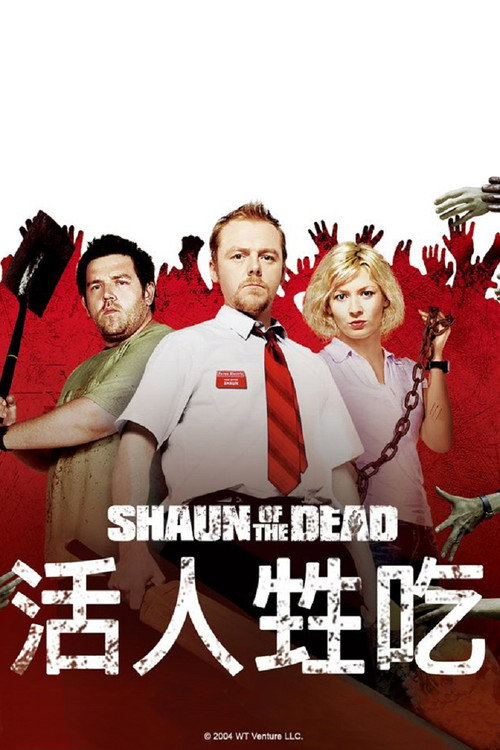
僵尸肖恩 Shaun of the Dead
「一部爱情喜剧。有僵尸。」
剧情梗概
三十出头的肖恩在电器店卖电视，女友丽兹受不了他永远泡在温彻斯特酒吧、和废柴室友艾德混在一起，提出了分手。肖恩决定振作一次，结果第二天早上伦敦全城丧尸。他的解决方案朴素得不能再朴素：去接妈妈、抢回丽兹，然后所有人躲进那家他们本来就每天都去的酒吧——反正也没有别的地方可去。
亮点
- 埃德加·赖特与西蒙·佩吉合写，「血与冰淇淋三部曲」第一部（另两部是《热血警探》《世界尽头》）。
- 全片严格使用乔治·A·罗梅罗《活死人之夜》的语法，但主角换成了一群压根没注意到世界末日的伦敦人。
- 最大的乐趣在二刷：开场每一个看似闲笔的动作（买东西、翻栅栏、丢罐子），后半段都会以丧尸的方式原样重演。
- 比尔·奈伊的继父菲利普和佩内洛普·威尔顿的母亲贡献了全片最正经也最好笑的几场戏。
- 《帝国》杂志把它列进影史百大英国电影第 85 名、最佳丧尸片第 12 名。
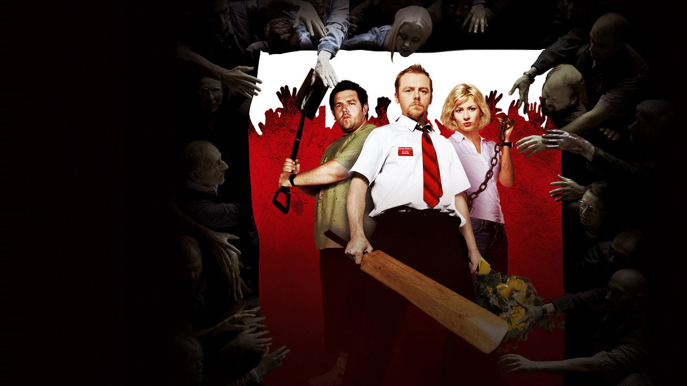
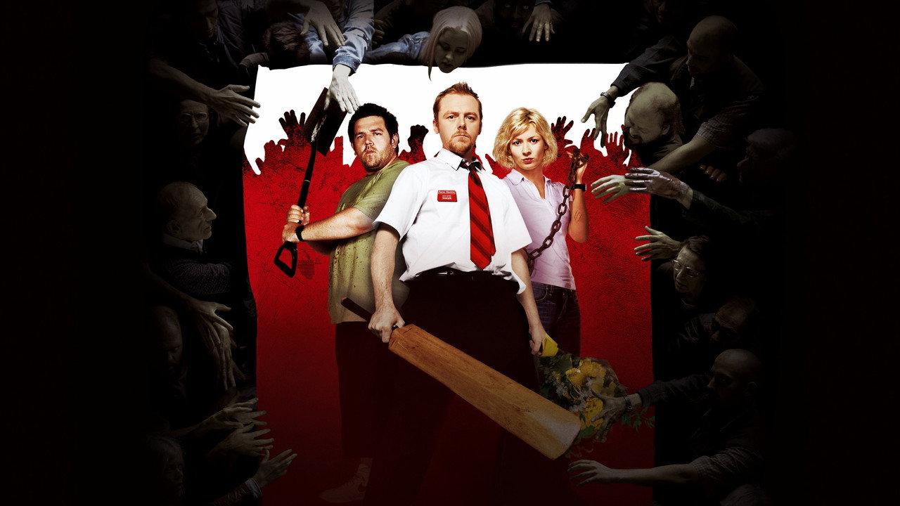
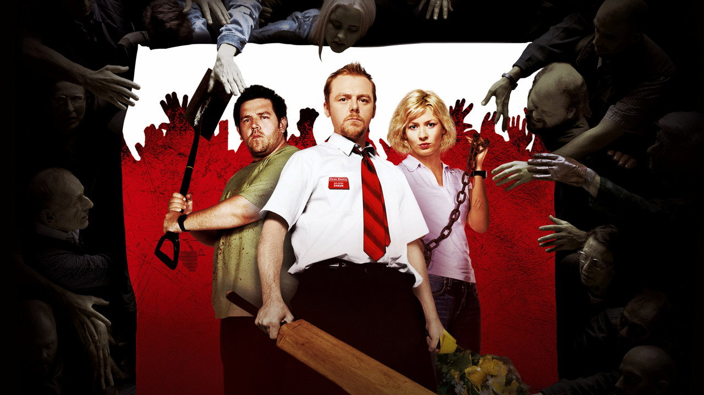
导演与主创 · 他们的历史作品
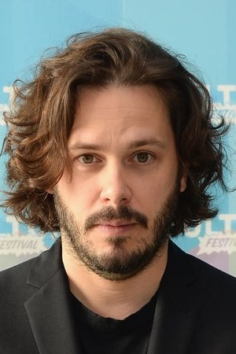
 极盗车神
极盗车神 歪小子斯科特对抗全世界
歪小子斯科特对抗全世界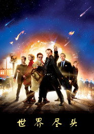
世界尽头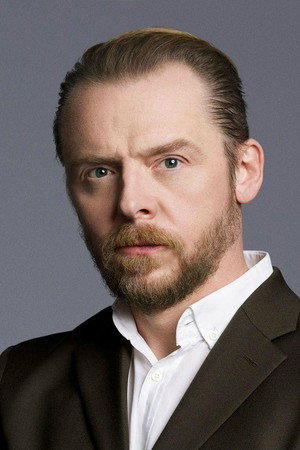
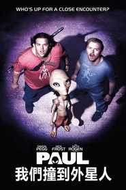
保罗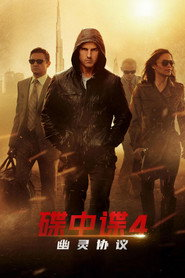
碟中谍4：幽灵协议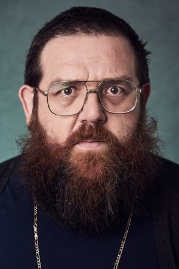
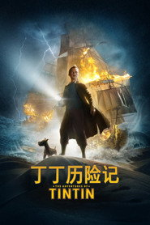
丁丁历险记短评（轻微剧透）
《僵尸肖恩》容易被当成恶搞片，其实它非常认真地遵守了丧尸片的每一条规则——这正是它好笑的原因。赖特和佩吉做的是一件事：把「世界末日」塞进一个三十岁英国男人的日常里，而他最关心的仍然是能不能挽回女友、能不能保住那家酒吧。笑点不是来自对类型片的嘲讽，而是来自角色对这些事的认真程度完全错位。技术上它是一部教科书：开场那段跟拍肖恩买可乐的长镜头，把「人已经像丧尸一样活着」这件事先讲了一遍，后面的丧尸只是把它坐实。它也不完美——中段节奏略松，艾德的某些玩笑按今天的标准确实过时（佩吉本人在 2024 年也回应过这点）。轻微剧透：最后他们确实活下来了，而且世界以一种最英国的方式恢复了原样。
为什么值得一看
喜欢《惊变28年》《僵尸之地》《林中小屋》这类「丧尸片但不只是丧尸片」的观众；想看类型混搭与英式幽默的人。含丧尸暴力与血腥（R 级 / 15 禁）。内地未引进，流媒体可看。
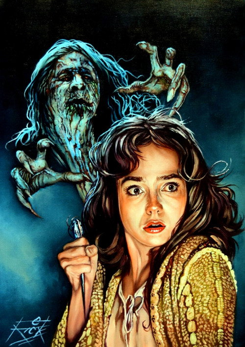
阴风阵阵 Suspiria
「每一帧都像被打翻的颜料罐。」
剧情梗概
深夜暴雨，美国芭蕾舞学生苏西抵达德国弗赖堡的舞蹈学院，在门口撞见一个女生赤脚狂奔而出，嘴里念着谁也听不懂的话。第二天那个女生死了。苏西住进学校，天花板开始掉蛆、走廊尽头总有脚步、同学一个个消失。她慢慢听说这栋楼里住着一位「叹息之母」——而她不是传说。
亮点
- 达里奥·阿基多「三位母亲三部曲」第一部（《地狱》《泪之母》为后两部），公认的意大利铅黄电影巅峰。
- 全片用 Technicolor 三色打光（红 / 绿 / 蓝）拍成，是胶片时代最后一批把颜色用到极致的案例之一。
- 配乐由前卫摇滚乐队 Goblin 创作；阿基多是先放音乐再拍，合成的耳语与鼓点和画面同等重要。
- 开场那场雨夜杀人戏长达近十分钟，暴力程度在 1977 年属于公然挑衅，此后被无数恐怖片致敬。
- 2018 年卢卡·瓜达尼诺翻拍版气质完全不同（豆瓣 7.1 / RT 65%），反而衬出原版「不讲道理但极美」的不可替代。
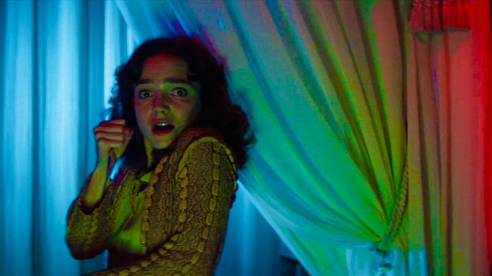
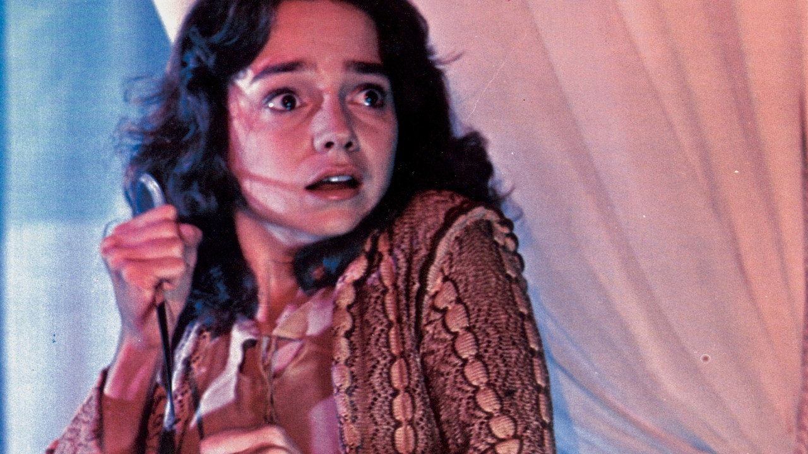
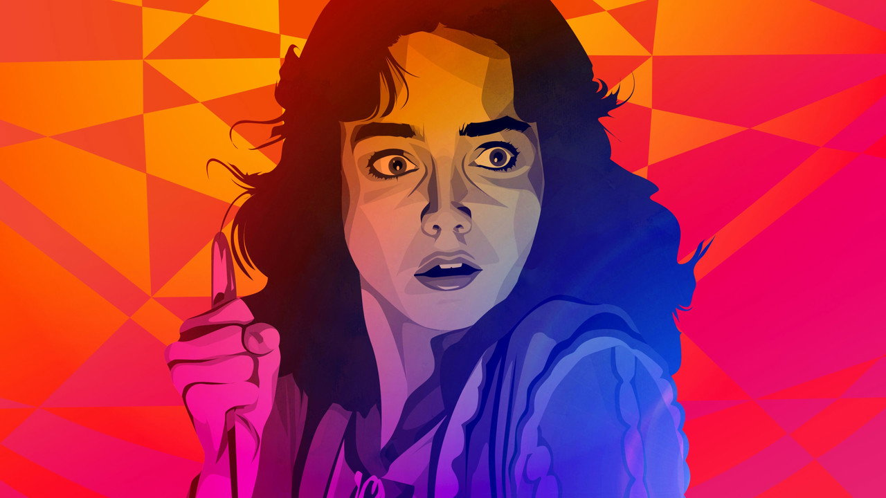
导演与主创 · 他们的历史作品
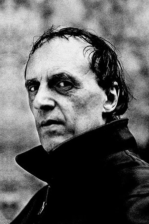
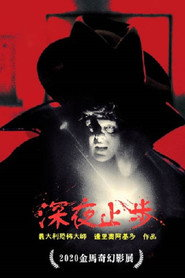
夜深血红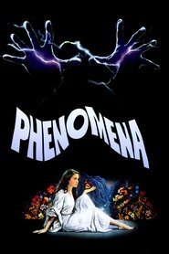
神话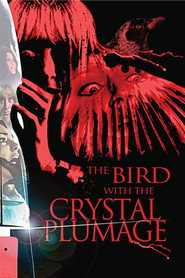
摧花手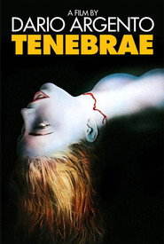
黑暗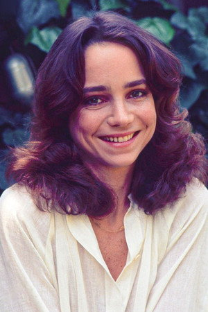
 少数派报告
少数派报告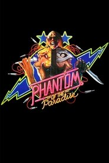
天堂魅影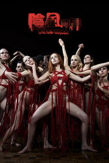
阴风阵阵 骨及所有
骨及所有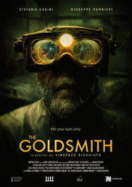
金匠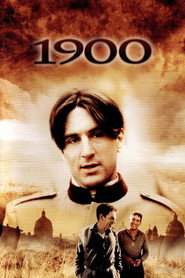
一九零零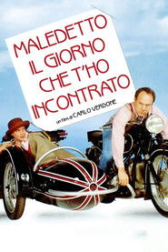
该死的那天，我遇见了你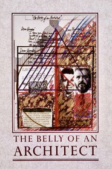
建筑师之腹短评（轻微剧透）
看《阴风阵阵》你要先接受一件事：它的剧情是次要的，逻辑是可以不要的。阿基多想要的是一种生理反应——颜色、声音、空间共同造成的、说不出来源的不适。他做到了，而且此后五十年没人做到这么彻底。红色的走廊、蓝色的房间、绿色的光打在脸上，配上 Goblin 那支像念咒一样的配乐，你会觉得眼睛在被直接刺激。苏西这个角色之所以弱，是因为她本来就不重要：她是一双走进这栋房子的眼睛。真正的主角是那栋建筑本身，以及它背后那套古老、女性、毫无道德的秩序。缺点要说：情节推进基本靠巧合，台词翻译质量参差，第一次看很容易在中段走神。轻微剧透：最后活下来的那个人，是被安排活下来的。
为什么值得一看
喜欢《夜深血红》《意大利恐怖片 / 铅黄》谱系、以及《闪灵》《仲夏夜惊魂》这类「美得让人不安」的观众；对视听语言比对剧情更敏感的人。含明确暴力与血腥（1977 年尺度，R 级）。内地未引进。
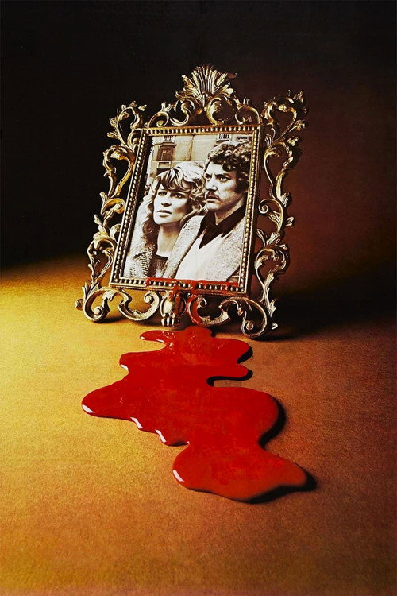
威尼斯疑魂 Don't Look Now
「他看见的是未来，只是来得太晚了。」
剧情梗概
女儿克里斯汀在自家花园溺水身亡之后，古迹修复师约翰带着妻子劳拉去威尼斯修一座教堂。劳拉遇到一对姐妹，其中失明的那位说她「看见」了克里斯汀，就坐在父母中间、还活着的样子。劳拉信了，约翰不信。随后约翰开始不断在威尼斯的小巷里瞥见一个穿红外套的小小身影——和女儿死那天穿的那件一模一样。
亮点
- 改编自达芙妮·杜穆里埃 1971 年同名短篇；尼古拉斯·罗伊格用碎片化剪辑，把「预知」拍成了时间的错位。
- 那场著名的床戏在 1973 年引发巨大争议，实际上导演是把欢愉与两人穿衣出门的镜头交叉剪在一起——它在讲「之后」，不是在讲性。
- 红色是全片唯一的彩色母题：外套、球、玻璃、水，每一次出现都在指向同一个人。
- 全片几乎没有配乐恐怖，靠的是水声、脚步声和威尼斯冬季空巷里的回响。
- 《Time Out》2011 年「影史百大英国电影」把它排在第一；BFI 与《视与听》榜单常客。
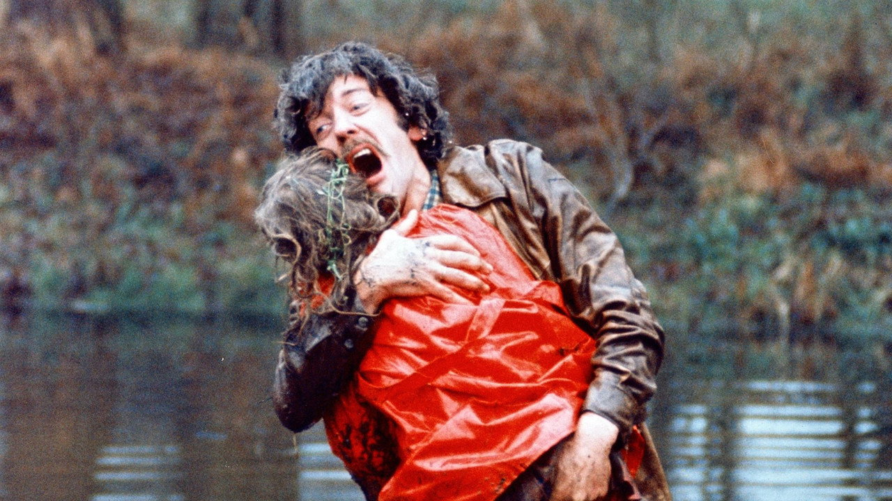
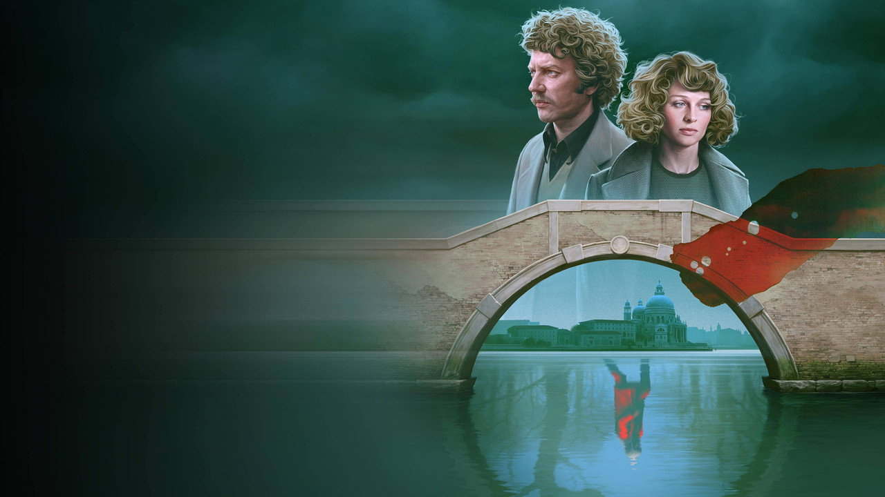
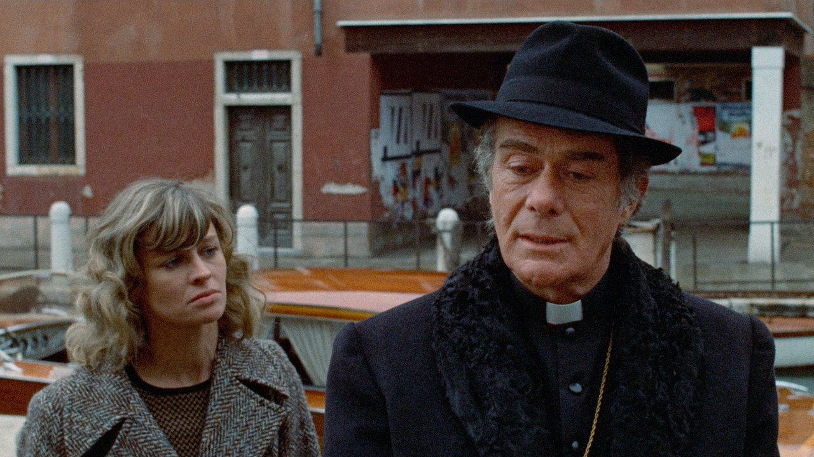
导演与主创 · 他们的历史作品
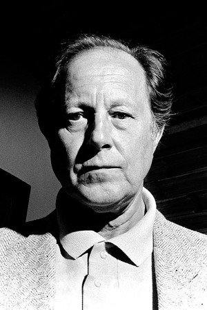
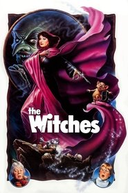
女巫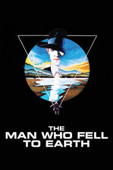
天外来客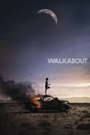
小姐弟荒原历险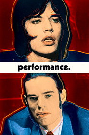
迷幻演出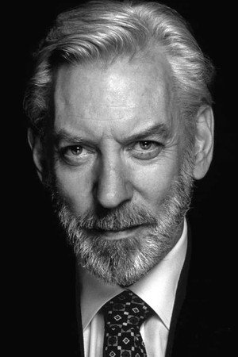
 饥饿游戏2：星火燎原
饥饿游戏2：星火燎原 饥饿游戏
饥饿游戏 饥饿游戏3：嘲笑鸟（上）
饥饿游戏3：嘲笑鸟（上）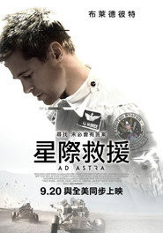
星际探索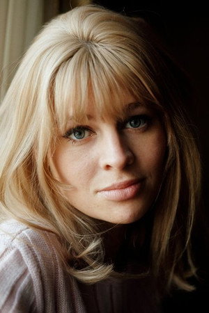
 哈利·波特与阿兹卡班的囚徒
哈利·波特与阿兹卡班的囚徒 华氏451度
华氏451度 特洛伊
特洛伊短评（轻微剧透）
《威尼斯疑魂》是一部把「 grief 」这个抽象词拍成物理空间的电影。罗伊格最狠的一手是剪辑：他把约翰看到的碎片和之后发生的事交替剪在一起，观众会本能地以为那是闪回，直到最后才发现那是闪前——他看见的一直是将来，只是他以为那是过去。这个错位本身就是丧亲者的状态：你不断在人群里认出那个已经不在的人，你分不清那是记忆还是预感。威尼斯被拍成一座正在腐烂、没有出路的水城，冬天、雾、石板路，所有东西都是湿的。唐纳德·萨瑟兰的约翰是个彻底的理性派，这正是他最脆弱的地方：他看得见，但不肯承认自己看见。缺点诚实说：节奏很慢，中段有大量无目的的行走，豆瓣 7.2 的反应很正常。轻微剧透：最后一分钟你会明白，他从一开始就没有机会。
为什么值得一看
喜欢《闪灵》《小岛惊魂》《哭声》这类「 grief 恐怖」的观众；对非线性叙事与氛围型惊悚有兴趣的人。含一场争议性床戏与强烈心理压迫（R 级）。内地未引进。
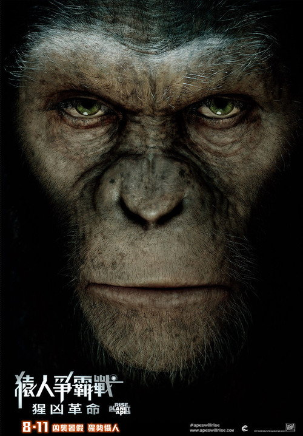
猩球崛起 Rise of the Planet of the Apes
「他开口说的第一个词是——不。」
剧情梗概
基因公司研究员威尔为治父亲的阿尔茨海默症研发药物 ALZ-112，在一只叫凯撒的小猩猩身上试验成功。凯撒拥有了人类的智力，却因为一次意外被送进猿类收容所。在那里他学会愤怒、学会组织、也学会不再指望人类。而那款药既是解药也是病毒——当它扩散到旧金山，凯撒带着同伴走上了金门大桥。
亮点
- 安迪·瑟金斯用动作捕捉演凯撒，被普遍视为「特效时代的表演」里程碑——当年未获奥斯卡提名，至今仍是争议话题。
- 特效由《阿凡达》团队维塔数码担纲，大量场景在真实外景实拍后加猿，而不是全绿幕。
- 收容所那二十多分钟几乎没有对白，全靠肢体与镜头调度，《村声》称它是「近乎默片的电影」。
- 全球票房 4.82 亿美元，把沉睡多年的《人猿星球》系列重新盘活，两部续作口碑一部比一部高。
- 2011-10-28 内地公映，是四部「猩球」里豆瓣评分最高的一部（8.2）。
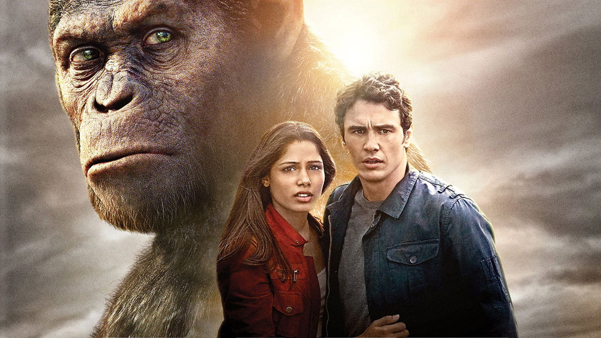
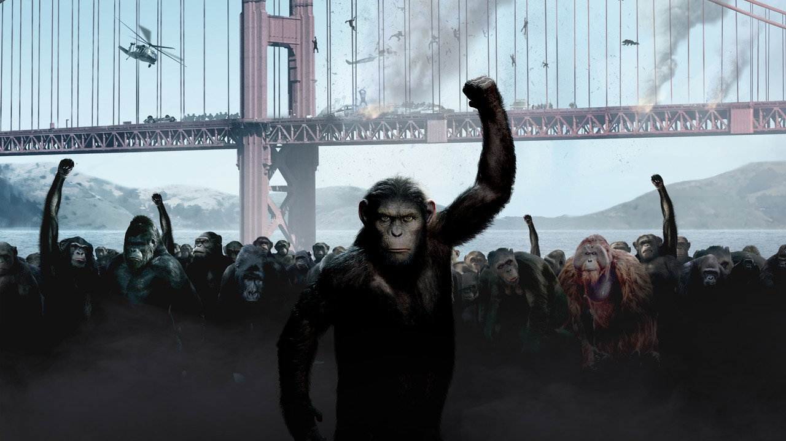
导演与主创 · 他们的历史作品
 猩球崛起2：黎明之战
猩球崛起2：黎明之战 猩球崛起3：终极之战
猩球崛起3：终极之战 指环王3：王者无敌
指环王3：王者无敌 指环王2：双塔奇兵
指环王2：双塔奇兵 127小时
127小时 刺杀金正恩
刺杀金正恩短评（轻微剧透）
《猩球崛起》表面上是一部暑期科幻大片，实际上讲的是「一个被当成动物养大的聪明孩子，是什么时候决定不再当人类的」。凯撒的成长线写得非常扎实：他从威尔家的客厅，到收容所的玻璃房，到红杉林，每一次换空间都是一次身份的收紧。瑟金斯的表演是核心——他不靠吼，他靠眼神的停顿和肩膀的角度，你能清楚看到一只猩猩在「决定」。收容所那段几乎无对白的处理是全片最好的部分：一个高智商个体被关进一群不懂他的同类里，他先挨打、再观察、再排序、最后站到最高处。缺点要说：人类角色普遍单薄，詹姆斯·弗兰科和芙蕾达·平托的线基本是工具性的；第三幕的金门大桥大战确实有点急。轻微剧透：凯撒最后开口说的那句话，是整部片的全部论点。
为什么值得一看
喜欢《第九区》《人类之子》《机械姬》这类「科幻外衣下的身份 / 权力寓言」的观众；对动作捕捉表演有兴趣的人。含猿族暴力与冲突场面（PG-13）。内地曾公映，流媒体可看。
黑暗面 La cara oculta
「这栋房子里有一间谁也找不到的房间。」
剧情梗概
乐团指挥亚德里安的女友贝伦留下一卷视频后失踪，活不见人死不见尸，警察把他当嫌疑人反复盘问。他去酒吧买醉，和女招待法比安娜好上，很快让她住进那栋半山的别墅。法比安娜开始觉得房子不对劲：水温忽冷忽热、浴缸里的水面自己起波纹、狗一直对着墙叫。她捡到一把没有锁孔对应的钥匙，而墙的另一面，有人正隔着镜子看她。
亮点
- 哥伦比亚导演安德烈斯·拜斯的长片成名作；他后来执导了 Netflix《毒枭》《毒枭：墨西哥》的多集。
- 核心道具是「单面镜」：你在镜子这头看见自己，另一个人正从那头看你——这个设定本身就是片名。
- 结构分成两段视角：前半段看一个人的失踪，后半段看另一个人被困，中间是同一段时间轴。
- 成本极低，主要场景只有一栋房子，压迫感几乎全靠声音设计（水管的嗡鸣、闷在墙里的敲击）。
- 2024 年被韩国翻拍成《隐藏的面孔》（原版导演亲自编剧，豆瓣 6.3），对照之下更显原版的克制有多难。
导演与主创 · 他们的历史作品
 末日浩劫
末日浩劫 我需要你
我需要你 通勤营救
通勤营救短评（轻微剧透）
《黑暗面》是一款结构玩具，但它的玩具属性用得很聪明：同一段时间，前后两半由两个女人的视角各讲一遍，你以为已经看完的那部分，在第二部分里变成了完全另一回事。它最有效的地方不是那个机关，而是它让两个女人之间隔着一层玻璃互相观察——一个在明处、一个在暗处，一个自由、一个窒息，而她们争夺的是同一个男人。拜斯把房子拍成了一个器官：水管传声、浴缸起波纹、镜子反光，所有「灵异」的暗示最后都会落回物理层面，这让惊悚变得可信。中段视角切换那一下是真正的爽点，也是这部片被反复推荐的原因。缺点要说：人物动机经不起深究，两个女主都偏符号化，豆瓣 8.1 有相当部分是「机关加分」。轻微剧透：真正决定结局的那把钥匙，早就出现过，只是没人低头去看。
为什么值得一看
喜欢《看不见的客人》《黑暗面》式西班牙 / 拉美悬疑、《万能钥匙》《科洛弗道10号》这类「房子里有秘密」的观众。含部分暴力与情欲场面（西语原版未分级）。内地未引进，流媒体可看。
夜行动物 Nocturnal Animals
「他把他们离婚这件事，写成了一桩谋杀。」
剧情梗概
画廊主苏珊收到前夫爱德华寄来的小说手稿《夜行动物》，邀请她先读。书里，数学教授托尼带着妻女在德州的夜路上被三个男人逼停，妻女被带走，被发现时已经死了，托尼在警探博比的帮助下追踪凶手。苏珊一边读，一边想起二十年前自己是怎么放弃这个「不够狠」的男人的——而书里的每一页，都像是写给她的。
亮点
- 汤姆·福特第二部长片（前作《单身男子》），改编自奥斯汀·赖特 1993 年小说《托尼与苏珊》。
- 三条时间线并行：现实的洛杉矶（冷、空、极度对称）、小说里的德州（热、脏、血）、以及二十年前的回忆。
- 迈克尔·珊农演的警探博比凭此获奥斯卡最佳男配角提名，是全片最松弛也最狠的一场场戏。
- 福特是时装设计师出身，却刻意不让片中出现任何一件自己品牌的产品。
- 口碑明显分裂：烂番茄 74% / Metacritic 67，海外影评人普遍认为「形式大于内容」，国内观众好感度反而更高。
导演与主创 · 他们的历史作品
 降临
降临 正义联盟
正义联盟 水形物语
水形物语 利刃出鞘
利刃出鞘短评（轻微剧透）
《夜行动物》讲的是一种很具体的报复：不是伤害你，是让你看清你当年放弃了什么。爱德华没有寄信、没有打电话，他寄了一本小说，然后让苏珊自己在里面认出自己。福特的三层结构做得非常干净——洛杉矶的部分是冷调、对称、几乎没有温度的构图，德州的部分是热的、脏的、血糊在挡风玻璃上的，两者的温差就是苏珊心里那笔账的温度。珊农的博比是意外之喜：一个得过肺癌、说话慢吞吞、做事却毫不留情的德州警探，几场戏就把整部片从「精致的复仇寓言」拉回了有血有肉。缺点如实说：隐喻太满，洛杉矶那条线有点空洞，苏珊的痛苦始终隔着一层玻璃，这也是海外评分只有 74% 的主要原因。轻微剧透：最后那顿饭，他根本没来。
为什么值得一看
喜欢《消失的爱人》《危情十日》《美国精神病人》这类「关系里的暴力」惊悚的观众；对时装美学与三层叙事有兴趣的人。含小说段落中的性暴力与谋杀描写（R 级）。内地未引进，流媒体可看。
夜长梦多 The Big Sleep
「看不懂没关系——反正没人看得懂。」
剧情梗概
私家侦探菲利普·马洛被老将军斯特恩伍德请去解决小女儿卡门的一笔赌债。一个卖珍本书的老板、一个失踪的女婿、一具沉在码头水里的轿车，尸体开始一个接一个出现。马洛在两个女儿之间来回：大女儿薇薇安冷静、锋利、什么都知道一点；小女儿卡门什么都不记得，或者假装不记得。案子最后是解决了，至于到底谁杀了谁，连原著作者钱德勒都说不清。
亮点
- 改编自雷蒙德·钱德勒 1939 年小说《长眠不醒》，编剧阵容包括威廉·福克纳与利·布拉克特。
- 片中有一桩著名的悬案：剧组真的写信问钱德勒「欧文·泰勒是谁杀的」，钱德勒回信说他也不知道。
- 1945 年拍完后搁置一年，公映前又补拍了鲍嘉与白考尔的大量调情戏——试映版与公映版差异极大，两个版本都流传至今。
- 鲍嘉与白考尔是黑色电影史上最著名的一对银幕搭档，两人真实的婚姻让台词里的火药味格外自然。
- 1997 年入选美国国家电影登记部；AFI 百年百大电影与百年百大惊栗片双榜在列。
导演与主创 · 他们的历史作品
 逃亡
逃亡 苦雨恋春风
苦雨恋春风短评（轻微剧透）
《夜长梦多》是那种「情节不值得追究、但每一分钟都值回票价」的电影。你如果试图理清谁杀了谁，会失望——这个案子本来就没有解，霍华德·霍克斯也压根不打算给你。他要的是三件事：台词、节奏、以及鲍嘉和白考尔之间那种刀口上跳舞的对话。马洛每到一个地方都要先说几句漂亮话，每一句都像在赌，而对方也每一句都接得住——这种语速和进攻性是钱德勒的东西，也被福克纳改得更狠。霍克斯的镜头极其干净：他从不炫技，只是把人放在恰当的距离上，让你看清谁在说谎。卡门这个角色（玛莎·维克斯）是片中真正的暗流，她那场坐在马洛办公室椅子上的戏，是整部片最不安的几分钟。轻微剧透：马洛最后赢了，但他赢的方式是把所有人一起交出去。
为什么值得一看
喜欢《马耳他之鹰》《历劫佳人》《唐人街》这类硬汉侦探片的观众；想补黑色电影源头的人。无现代意义上的血腥（1946 年审查尺度）。内地未引进。
荒蛮故事 Relatos salvajes
「文明，只是一层很薄的漆。」
剧情梗概
六个互不相干的故事：一架飞机上所有乘客都发现自己认识同一个被他们伤害过的人，而机长就是他；公路上两个司机因为一次别车互相追杀到同归于尽；一个爆破工程师被反复的拖车罚单砸掉生活，于是把自己的车变成炸弹；一场婚礼上新娘发现新郎出轨，然后决定把婚礼开到底。每一个都从一件小到不能再小的事开始。
亮点
- 达米安·斯兹弗隆自编自导，入围 2014 年戛纳主竞赛（当年唯一一部喜剧），获奥斯卡最佳外语片提名、英国电影学院奖最佳非英语片。
- 制片人之一是佩德罗·阿莫多瓦的兄弟奥古斯汀，气质上确实和阿莫多瓦的荒诞一脉相承，但要暴烈得多。
- 六段各自独立，导演不介入评判——「文明人失控」这件事本身既是笑点，也是恐怖点。
- 里卡多·达林（《谜一样的双眼》）与奥斯卡·马丁内斯（《杰出公民》）各撑一段，表演风格完全不同。
- 豆瓣 8.8、TOP250 常客；2025 年 4 月才在内地公映，票房不高但口碑稳定。
导演与主创 · 他们的历史作品
短评（轻微剧透）
《荒蛮故事》让人笑得很不踏实，因为它每次都从你我都做过的事开始：被人别了一下车、被开了一张不合理的罚单、在酒席上发现伴侣骗你。斯兹弗隆厉害的地方在于他完全不评判——他只是把「如果这个人不再忍了」这条线一路画到底，画到你没法笑为止。于是六段故事其实是同一个实验做了六次，每次结果都更难看。最精彩的是第三段的公路追杀：两个成年人为了一口气，把彼此逼成两只动物，最后烧死在一辆车里，镜头拉远时你甚至分不清谁是谁——这就是片名。它也不完美：第四段（拖车罚单）在剧作上明显比其它几段单薄，靠社会情绪撑；个别段落的讽刺有点用力。轻微剧透：全片没有一个人真的赢，只有人暂时还没输。
为什么值得一看
喜欢《聚焦》之外更癫的那类社会讽刺、以及《天注定》《完美陌生人》式群戏的观众；能接受黑色幽默里夹着真实暴力的人。含明确暴力、血腥与粗口（原版 16 禁）。内地 2025 年已公映。
房间 Room
「对五岁的杰克来说，房间就是全世界。」
剧情梗概
乔伊十九岁那年被「老尼克」骗进后院一间上锁的棚屋，关了七年。她生下儿子杰克，杰克从没见过外面。为了让孩子能活下去，她把十平米说成整个世界：天窗是唯一的天空、电视里的人是假的、《芝麻街》的朋友是真的。直到杰克五岁，她终于承认外面还有别的东西——而要出去，只能让儿子装死。
亮点
- 改编自艾玛·多诺霍 2010 年同名小说，她本人写剧本；灵感来自奥地利弗利茨尔案，但刻意回避真实案件的细节。
- 布丽·拉尔森凭乔伊一角拿下奥斯卡、金球、英国电影学院三座最佳女主角。
- 前半段几乎只在一间棚屋内拍摄，摄影机位被严格限制在杰克的视高——「世界就这么大」成了物理事实。
- 雅各布·特伦布莱当时只有九岁，大量镜头是一次过；凭此拿下评论家选择奖最佳青少年演员。
- 导演伦尼·阿伯拉罕森是爱尔兰人（《弗兰克》《理查德所为》），本片让他首次入围奥斯卡最佳导演。
导演与主创 · 他们的历史作品

 惊奇队长
惊奇队长 龙虎少年队
龙虎少年队 惊奇队长2
惊奇队长2 金刚：骷髅岛
金刚：骷髅岛 奇迹男孩
奇迹男孩 好小子们
好小子们 铁血战士
铁血战士短评（轻微剧透）
《房间》最反直觉的一点是：逃出去之后才是真正难的部分。前五十分钟是一个高完成度的密室逃脱，但导演真正想拍的，是母子俩从那间屋子出来之后，怎么重新学会活在一个比房间大得多的世界里。乔伊要面对的是自己已经不会当成年人了，杰克要面对的是「妈妈骗了我七年」这件事——他甚至怀念那间屋子。阿伯拉罕森的克制是这部片最大的优点：不拍施暴、不拍回忆闪回、不让镜头在痛苦上停留，所有重量都压在两个人坐在床边说话的时刻。拉尔森的表演配得上那座奖，而特伦布莱的杰克是真正的奇迹：一个五岁孩子的独白撑起了整部片的视角，你完全相信他真的以为电视里的人是假的。轻微剧透：最后他们回去了，而且是以杰克的方式告别。
为什么值得一看
喜欢《聚焦》《谜一样的双眼》《海边的曼彻斯特》这类「伤痛之后如何继续」剧情片的观众；对亲子关系与心理重建主题有兴趣的人。无直接暴力画面，但涉及囚禁与性侵背景（12A / PG-13 以上）。内地未引进，流媒体可看。